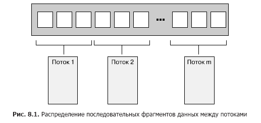
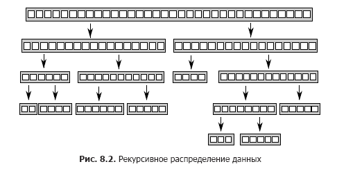
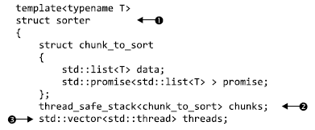
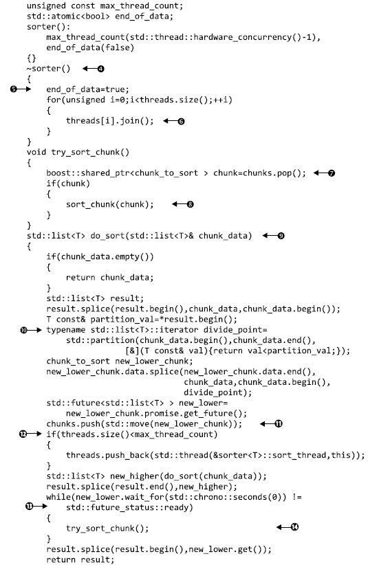
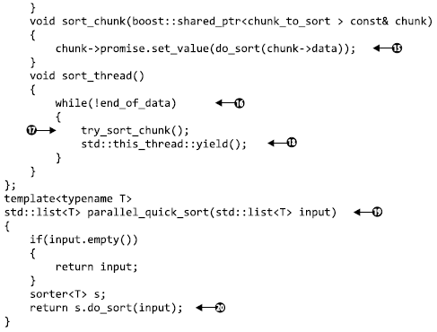

Представьте, что вам нужно построить дом. Для этого придется вырыть котлован под фундамент, залить сам фундамент, возвести стены, проложить трубы и электропроводку и т. д. Теоретически при достаточных навыках все можно сделать самостоятельно, но, скорее всего, на это уйдет много времени и придется переключаться с одной работы на другую. Но можно нанять помощников. Тогда нужно будет выбирать, сколько помощников нанимать, и решать, что они должны уметь. Можно, к примеру, нанять двух разнорабочих и трудиться вместе с ними. Тогда по-прежнему придется переключаться с одной работы на другую, но теперь дела пойдут быстрее, так как исполнителей станет больше.
Можно выбрать другой вариант — нанять бригаду специалистов, например каменщика, плотника, электрика и водопроводчика. Каждый будет работать по своей специальности, следовательно, пока у водопроводчика не появится фронт работ, он будет сидеть без дела. И все же дела пойдут быстрее, чем прежде, поскольку работников стало больше, и, пока электрик будет вести проводку в кухне, водопроводчик может заняться санузлом. Но когда нет работы для конкретного специалиста, простоев получается больше. Однако можно заметить, что даже с учетом простоев работа движется скорее, когда за дело берутся специалисты, а не команда разнорабочих. Специалистам не нужно постоянно менять инструменты, и наверняка каждый из них будет выполнять свою задачу быстрее разнорабочего. Будет ли так на самом деле, зависит от конкретных обстоятельств: все познается на практике.
Даже если задействовать специалистов, нужно все же выбирать разное количество работников различных специальностей. Возможно, есть смысл нанять, к примеру, больше каменщиков, чем электриков. К тому же состав вашей команды и общая эффективность ее работы могут меняться, если придется строить сразу несколько домов. Даже если для водопроводчика мало работы в отдельно взятом доме, то при строительстве сразу нескольких домов его можно занять на весь день. Притом, если вы не должны платить специалистам за простой, можно набрать команду побольше, даже при условии, что количество одновременно работающих людей не изменится.
Но хватит рассуждать о строительстве. Какое все это имеет отношение к потокам? А к ним можно применить аналогичные соображения. Следует решить, сколько потоков задействовать и какие задачи они должны выполнять. Нужны ли универсальные потоки, делающие ту работу, которая необходима в конкретный момент, или потоки-специалисты, хорошо приспособленные к чему-то одному? А может стоит сочетать те и другие? Эти решения необходимо принимать вне зависимости от причин распараллеливания программы, и от того, насколько они будут удачны, значительно зависит производительность и ясность кода. Поэтому так важно представлять, какие имеются варианты, чтобы при разработке структуры приложения принять грамотное решение. В этом разделе будет рассмотрен ряд приемов распределения задач, начиная с распределения данных между потоками до выполнения любой другой работы.
Проще всего поддаются распараллеливанию простые алгоритмы, например std::for_each, выполняющие операции над каждым элементом набора данных. Чтобы распараллелить этот алгоритм, можно назначить каждый элемент одному из обрабатывающих потоков. В дальнейшем, при рассмотрении вопросов производительности, станет понятно, что наилучший вариант распределения для достижения оптимальной производительности зависит от особенностей структуры данных.
При распределении данных простейшим считается вариант, когда первые N элементов назначаются одному потоку, следующие N элементов — другому и т. д. (рис. 8.1), но можно использовать и другие схемы. Независимо от способа распределения данных, каждый поток обрабатывает только назначенные ему элементы, никак не взаимодействуя с другими потоками до тех пор, пока не завершит обработку.

Структура должна быть знакома каждому, кто имел дело с программированием в среде Message Passing Interface (MPI, www.mpi-forum.org) или OpenMP (http://www.openmp.org/): задача разбивается на множество параллельно выполняемых задач, рабочие потоки запускают их независимо друг от друга, а результаты собираются на финальной стадии сведения. Такой подход использовался в примере с функцией accumulate из раздела 2.4: обе параллельные задачи и этап сведения представляют собой аккумулирование. Для простого алгоритма for_each финальный этап отсутствует, так как нечего сводить.
То, что в качестве сути финального этапа определено сведение, играет весьма важную роль: элементарная реализация, подобная показанной в листинге 2.9, выполнит это сведение в качестве итогового последовательного этапа. Но зачастую этот этап также распараллеливается: аккумулирование является операцией сведения, поэтому код листинга 2.9 можно изменить, чтобы получить рекурсивный вызов этого же кода, когда, к примеру, количество потоков больше минимального количества обрабатываемых потоком элементов. Также можно заставлять рабочие потоки выполнять этапы сведения, как только каждый из них завершит свою задачу, а не запускать всякий раз новые потоки.
При всей своей эффективности этот прием не отличается универсальностью. Иногда данные не удается аккуратно разделить заранее, поскольку состав каждой части становится известен только при обработке. В частности, это оказывается очевидным при использовании рекурсивных алгоритмов, например Quicksort, поэтому для них требуется иной подход.
У алгоритма Quicksort два основных этапа: разбиение данных на две части — все, что до одного из элементов (опорного), и все, что после него в окончательном порядке сортировки, и рекурсивная сортировка этих двух половин. Это невозможно распараллелить предварительным разбиением данных, так как определить, в какую «половину» они попадут, можно только в ходе обработки элементов. Намереваясь распараллелить этот алгоритм, нужно воспользоваться самой сутью рекурсии. На каждом уровне рекурсии выполняется все больше вызовов функции quick_sort, так как приходится сортировать как те элементы, что больше опорного, так и те, что меньше его. Эти рекурсивные вызовы независимы друг от друга, поскольку обращаются к отдельным наборам элементов. Из-за этого они первые кандидаты на конкурентность. Данное рекурсивное распределение показано на рис. 8.2.
Эта реализация уже встречалась в главе 4. Вместо выполнения двух рекурсивных вызовов для большей и меньшей половин использовалась функция std::async(), запускающая на каждом шаге асинхронные задачи для меньшей половины. Из-за применения std::async() C++ Thread Library должна была решать, когда запускать задачу в новом потоке, а когда — в синхронном режиме.
Есть одно важное обстоятельство: при сортировке большого набора данных запуск нового потока для каждой рекурсии приведет к быстрому росту числа потоков. При изучении вопросов производительности будет показано, что слишком большое количество потоков может замедлить работу приложения. Кроме того, при крупном наборе данных потоков может просто не хватить. Сам по себе замысел разбиения всей задачи в подобном рекурсивном режиме представляется весьма удачным, нужно только тщательнее отслеживать число потоков. В простых случаях с этим справляется функция std::async(), но есть и другие варианты.

Один из них заключается в применении для выбора количества потоков функции std::thread::hardware_concurrency(), как это делалось в параллельной версии функции accumulate() из листинга 2.9. Тогда вместо запуска нового потока для каждого рекурсивного вызова можно помещать подлежащий сортировке фрагмент в потокобезопасный стек, например такой, как рассматривался в главах 6 и 7. Если потоку больше нечем заняться либо он завершил обработку всех своих фрагментов или находится в ожидании сортируемого фрагмента, он может взять фрагмент из стека и отсортировать его.
В листинге 8.1 показана простая реализация этой технологии. Как и в большинстве других примеров, она лишь демонстрирует замысел, а не является кодом, готовым к практическому применению. Если используется компилятор C++17 и ваша библиотека его поддерживает, стоит воспользоваться параллельными алгоритмами, предоставляемыми стандартной библиотекой в соответствии с описаниями, приведенными в главе 10.
Листинг 8.1. Параллельный алгоритм Quicksort, в котором используется стек фрагментов, ожидающих сортировки



Здесь функция parallel_quick_sort (19) возлагает основную часть функциональных обязанностей на класс sorter (1) , предоставляющий простой способ группировки стека неотсортированных фрагментов (2) и множества потоков (3). Основная работа выполняется в компонентной функции do_sort (9), занятой обычным разбиением данных (10). На этот раз вместо запуска нового потока для каждого фрагмента она помещает этот фрагмент в стек (11) и запускает новый поток только при наличии свободного процессорного ресурса (12). Поскольку фрагмент со значениями меньшими, чем у опорного, может обрабатываться другим потоком, следовало бы дождаться его готовности (13). Чтобы время не растрачивалось зря (в том случае, если мы располагаем единственным потоком или все остальные потоки уже заняты), на период ожидания в этом потоке предпринимается попытка обработки фрагментов из стека (14) . Функция try_sort_chunk извлекает фрагмент из стека (7), сортирует его (8) и сохраняет результаты в промисе promise, чтобы их смог получить поток, который поместил этот фрагмент в стек (15).
Теперь только что запущенные потоки находятся в цикле и пытаются сортировать фрагменты из стека (17), если не установлен флаг end_of_data (16). Между проверками они уступают вычислительный ресурс другим потокам, чтобы те могли поместить в стек дополнительную работу. Работа кода в плане приведения в порядок этих потоков зависит от деструктора вашего класса sorter (4). Когда отсортированы все данные, функция do_sort вернет управление (даже при сохранении активности рабочих потоков), основной поток возвратится из parallel_quick_sort (20) и уничтожит объект sorter. Он установит флаг end_of_data (5) и станет ждать завершения работы потоков (6).Установка флага приведет к остановке цикла в функции потоков (16).
С таким подходом исчезнет проблема неограниченного числа потоков, присущая функции spawn_task, запускавшей новый поток, и пропадет зависимость от библиотеки потоков C++, выбиравшей за вас число потоков, как она делает при использовании std::async(). Вместо этого, чтобы не допустить слишком частого переключения задач, количество потоков ограничивается значением, возвращаемым функцией std::thread::hardware_concurrency(). Но возникает другая проблема: управление этими потоками и обмен данными между ними сильно усложняют код. Вдобавок, несмотря на то что потоки обрабатывают отдельные элементы данных, все они обращаются к стеку, добавляя в него новые фрагменты и забирая фрагменты для обработки. Такая острая конкуренция может снизить производительность, даже если используется свободный от блокировок (следовательно, неблокируемый) стек, и причины этого вскоре будут рассмотрены.
Данный подход является особой версией пула потоков — набора потоков, каждый из которых получает работу из списка отложенных работ, выполняет ее, а затем обращается к списку за новой. Некоторые потенциальные проблемы, присущие пулу потоков (включая конкуренцию при обращении к списку работ), и пути их решения рассматриваются в главе 9. О масштабировании создаваемого приложения таким образом, чтобы оно выполнялось на нескольких процессорах, более подробно поговорим в этой главе чуть позже (см. подраздел 8.2.1).
При распределении данных как до обработки, так и в рекурсивном режиме предполагается, что они заранее зафиксированы, и ведется поиск способов их распределения. Но так бывает не всегда: если данные создаются в динамическом режиме или поступают от внешнего источника, этот подход не работает. В таком случае, возможно, разумнее распределить работу по типам задач, а не на основе самих данных.
Распределение работы между потоками путем назначения каждому из них (заранее или рекурсивно в ходе обработки данных) различных фрагментов данных в любом случае основывается на предположении, что потоки собираются выполнять над каждым фрагментом одну и ту же работу. Альтернативный вариант распределения работы заключается в специализации потоков, где каждый выполняет отдельную задачу, как водопроводчики и электрики выполняют разные задачи при строительстве дома. Потоки могут работать с разными или одними и теми же данными, но в последнем случае они делают это с разными целями.
Это своеобразное разделение труда возникает в результате разделения решаемых задач с помощью конкурентности: у каждого потока имеется отдельная задача, которую он выполняет независимо от других потоков. Иногда другие потоки могут поставлять потоку данные или выдавать события, на которые он должен реагировать, но в целом каждый поток концентрируется на качественном выполнении какой-то одной задачи. Это неплохая базовая конструкция, где каждый фрагмент кода должен отвечать за что-то одно.
Однопоточному приложению приходится справляться с конфликтами, связанными с принципом единой ответственности, когда имеется несколько задач, которые должны выполняться непрерывно в течение определенного времени, или приложение должно своевременно справляться с обработкой поступающих событий (к примеру, пользователь нажимает клавишу или по сети приходят данные) даже при наличии других незавершенных задач. В среде однопоточных вычислений приходится самостоятельно создавать код, который выполняет часть задачи A, часть задачи B, проверяет, не нажата ли клавиша и нет ли поступивших сетевых пакетов, а затем циклично возвращается к выполнению следующей части задачи A. Это приводит к усложнению кода для выполнения задачи A из-за необходимости сохранения его состояния и периодического возвращения управления основному циклу. Если в цикл добавить слишком много задач, работа может существенно замедлиться и пользователь, вероятно, заметит замедленную реакцию на нажатие клавиш. Уверен, что крайние проявления подобной ситуации в тех или иных приложениях наблюдал каждый: вы ставите перед приложением какую-то задачу, и интерфейс ни на что не реагирует, пока она не завершится.
Тут на сцену выходят потоки. Если каждую задачу запускать в отдельном потоке, то этим вместо вас может заняться операционная система. В коде для задачи A можно сосредоточиться на выполнении задачи, не беспокоясь о сохранении состояния и возвращении в основной цикл или о том, сколько времени пройдет, прежде чем это случится. То есть операционная система автоматически сохранит состояние и в нужный момент переключится на задачу B или C, и, если система, на которой будет выполняться программа, обладает несколькими ядрами или процессорами, появится возможность одновременно выполнять задачи A и B. Код обработки нажатий клавиш или поступления сетевых пакетов теперь может выполняться своевременно, и в выигрыше останутся все: пользователь получит адекватную реакцию программы, а вы, как разработчик, получите упрощенный код, поскольку каждый поток можно будет направить на выполнение операций, имеющих прямое отношение к его обязанностям, не смешивая их с потоком управления и взаимодействием с пользователем.
Вырисовывается какая-то идеальная картина. Но может ли все складываться именно таким образом? Как всегда, все зависит от конкретных обстоятельств. Если соблюдается полная независимость и потокам не нужно обмениваться друг с другом данными, то именно так все и произойдет. К сожалению, подобная ситуация наблюдается довольно редко. Зачастую необходимые пользователю действия имеют вид удобных фоновых задач, и им нужно оповестить пользователя о выполнении задачи, обновив каким-то образом пользовательский интерфейс. Или же пользователю может потребоваться прекратить выполнение задачи, поэтому пользовательскому интерфейсу нужно будет каким-то образом отправить сообщение фоновой задаче, заставив ее прекратить выполнение. В обоих случаях требуется тщательно продумать конструкцию и надлежащую синхронизацию, но выполняемые задачи так и останутся разобщенными. Поток пользовательского интерфейса по-прежнему управляет этим интерфейсом, но на него может возлагаться выполнение обновления по запросу других потоков. Поток, реализующий фоновую задачу, по-прежнему концентрируется на операциях, требующихся для ее выполнения, бывает и так, что один из фоновых потоков допускает остановку задачи другим потоком. В обоих случаях потокам все равно, откуда поступает запрос, им важно лишь то, что он предназначен для них и напрямую связан с их обязанностями.
При распределении ответственности между несколькими потоками возникают две серьезные опасности. Во-первых, может оказаться, что распределены ненадлежащие обязанности. Признаком этого является слишком большой объем данных, совместно используемых потоками, или же то, что разным потокам приходится дожидаться друг друга. В обоих случаях наблюдается слишком интенсивный обмен данными между потоками. Нужно разобраться с причинами такого обмена. Если он вызван одной и той же причиной, возможно, все, чем эти потоки занимаются, должно стать основной обязанностью одного потока и следует освободить все занятые прежде потоки. В том случае, когда между двумя потоками ведется интенсивный обмен данными, а между другими потоками — гораздо менее напряженный, возможно, эти два потока должны быть сведены в один.
При разделении работы между потоками на основании типа задач не следует ограничиваться только полностью изолированными вариантами. Если несколько наборов входящих данных требуют одной и той же последовательности применяемых операций, работу можно распределить таким образом, чтобы каждый поток выполнял один этап из общей последовательности.
Если суть задачи заключается в применении одной и той же последовательности операций ко многим независимым элементам данных, то для использования доступных в вашей системе средств конкурентности можно задействовать конвейер. Здесь прослеживается аналогия с настоящим конвейером: данные, поступив на один его конец, проходят через серию операций и выходят с другого конца.
При таком распределении работы отдельный поток создается для каждого конвейерного этапа — по одному потоку для каждой операции в последовательности. Когда операция завершена, элемент данных помещается в очередь, из которой его забирает следующий поток. Это позволяет потоку, выполняющему первую операцию в последовательности, приступить к работе со следующим элементом данных, в то время как второй поток конвейера работает с первым элементом.
Альтернативный вариант распределения данных между потоками, рассмотренный в подразделе 8.1.1, подходит для случаев, когда к началу операции о самих входных данных ничего не известно. Например, данные могут поступить по сети или первой операцией последовательности может быть сканирование файловой системы для идентификации обрабатываемых файлов.
Конвейеры хорошо справляются с ситуациями, когда каждая операция в последовательности требует много времени: распределение между потоками задач, а не данных позволяет изменить профиль производительности. Предположим, что для обработки на четырех ядрах имеется 20 элементов данных и каждому элементу данных требуется четыре этапа обработки, на каждый из которых уходит 3 с. Если распределить данные по четырем потокам, то у каждого из них будет пять обрабатываемых элементов. Если предположить, что других обработок, способных повлиять на хронометраж, не имеется, то через 12 с у вас будет четыре обработанных элемента, через 24 с — восемь и т. д. Все 20 элементов будут обработаны через минуту. А с конвейером все происходит иначе. Каждый из имеющихся четырех этапов можно назначить ядру обработки. Теперь первый элемент должен обрабатываться каждым ядром, следовательно, на это, как и прежде, уйдет целых 12 с. Получается, что через 12 с будет обработан всего лишь один элемент, что отстает по показателям от варианта распределения данных. Но как только конвейер будет заполнен, ситуация изменится: первое ядро, обработав первый элемент, переходит к обработке второго элемента, таким образом, как только последнее ядро обработало первый элемент, оно может выполнить свой этап обработки второго элемента. Теперь каждый элемент обрабатывается каждые 3 с вместо обработки элементов пакетами по четыре каждые 12 с.
Общее время обработки всего пакета увеличится, поскольку должно пройти 9 с, прежде чем последнее ядро приступит к обработке первого элемента. Но при определенных обстоятельствах может оказаться предпочтительнее более плавная и размеренная обработка. Рассмотрим, к примеру, систему просмотра цифрового видео высокого разрешения. Для комфортного просмотра видео обычно нужно демонстрировать не менее 25 кадров в секунду, а в идеале — гораздо больше. Кроме того, чтобы у пользователя возникала иллюзия непрерывного движения, все должно происходить равномерно: приложение, способное декодировать 100 кадров в секунду, будет бесполезным, если продержит паузу 1 с, после чего покажет 100 кадров, остановится еще на 1 с и покажет следующие 100 кадров. В то же время зрители, скорее всего, будут не против двухсекундной паузы перед просмотром видео. В таком случае распараллеливание с использованием конвейера, выдающего кадры в постоянном темпе, конечно же, предпочтительнее.
Рассмотрев различные способы распределения работы между потоками, давайте поговорим о факторах, влияющих на производительность многопоточной системы, и о том, как их учитывать при выборе способов.
Если конкурентность применяется в системах с несколькими процессорами для повышения производительности кода, следует знать, какие факторы могут повлиять на производительность. Даже если несколько потоков используются для распределения ответственности, нужно убедиться, что это не ухудшит производительность. Потребители не скажут вам спасибо, если на их великолепной машине с 16 ядрами ваше приложение будет работать медленнее, чем на старом одноядерном компьютере.
Как вскоре будет показано, на производительность многопоточного кода влияет множество факторов — даже такие простые, как перестановка элементов данных, обрабатываемых каждым потоком (притом что все остальное остается без изменений), могут вылиться в существенное снижение производительности. А теперь без пространных предисловий рассмотрим некоторые из этих факторов, начиная с наиболее очевидного: сколько процессоров имеется на целевой системе?
Количество (и структура) процессоров является первым существенным фактором, влияющим на производительность многопоточного приложения и играющим весьма важную роль. Иногда точно известно, каким будет целевое оборудование, и разработку можно вести с учетом этих сведений, получая реальные измерения на целевой системе или ее точной копии. В таком случае вам повезло, но обычно удача проходит мимо. Разработка может вестись на подобной системе, но отличия могут быть существенными. Например, программа разрабатывается на системе с двумя или четырьмя ядрами, но системы потребителей могут иметь один многоядерный процессор (с любым количеством ядер) либо несколько одноядерных или даже многоядерных процессоров. Характеристики поведения и производительности программы, рассчитанной на конкурентность, при различных обстоятельствах способны существенно варьироваться, поэтому нужно серьезно задуматься о возможном влиянии и по возможности все протестировать.
В первом приближении один 16-ядерный процессор аналогичен четырем четырехъядерным процессорам или 16 одноядерным процессорам: в любом случае в системе одновременно могут быть запущены 16 потоков. Если нужно этим воспользоваться, у вашего приложения должно иметься не менее 16 потоков. Когда их меньше, вычислительная мощность останется невостребованной, если только система не запустит одновременно другое приложение (сейчас проигнорируем эту возможность). В то же время, если имеется свыше 16 готовых к работе потоков, не заблокированных в ожидании развития событий, ваше приложение будет впустую тратить процессорное время на переключение между ними, о чем говорилось в главе 1. Подобная ситуация называется переоценкой вычислительных возможностей (oversubscription).
Чтобы приложение могло подгонять количество действующих потоков под число потоков, доступных для одновременного запуска на имеющемся оборудовании, стандартная библиотека потоков C++11 (Standard Thread Library) предоставляет функцию std::thread::hardware_concurrency(). Здесь уже демонстрировалась возможность задействовать ее для масштабирования количества потоков под возможности оборудования.
Использование функции std::thread::hardware_concurrency() непосредственным образом требует осторожности: ваш код не принимают в расчет какие-либо другие потоки, запущенные в системе, пока вы не поделитесь этой информацией явным образом. При наихудшем сценарии, если несколько потоков одновременно вызывают для масштабирования функцию, применяющую std::thread::hardware_concurrency(), может возникнуть переоценка вычислительных возможностей. Функции std::async() удается избежать этой проблемы, поскольку библиотека осведомлена обо всех вызовах и может справиться с диспетчеризацией. От проблемы можно избавиться также за счет грамотного использования пула потоков.
Но если даже учесть все потоки, запущенные в вашем приложении, останется влияние других приложений, действующих в то же самое время. Хотя одновременное применение на однопользовательских системах нескольких интенсивно потребляющих ресурс центрального процессора приложений — случай довольно редкий, есть ряд областей, где такое случается чаще обычного. Системы, разработанные с учетом такого сценария, обычно предлагают механизмы, позволяющие каждому приложению выбрать подходящее число потоков, хотя такие механизмы не вписываются в область действия стандарта C++. Один из вариантов, предназначенных для функции наподобие std::async(), заключается в учете общего количества асинхронных задач, запущенных всеми приложениями, при выборе числа потоков. Другой вариант предусматривает ограничение количества вычислительных ядер, которые может задействовать конкретное приложение. Следовало бы ожидать, что это ограничение отразится в значении, возвращаемом на таких платформах функцией std::thread::hardware_concurrency(), но подобный исход не гарантирован. Если нужно справиться с таким сценарием, обратитесь к документации по вашей системе, чтобы выяснить, доступны ли эти варианты.
Еще один нюанс ситуации заключается в том, что идеальный алгоритм решения данной проблемы может зависеть от ее масштаба в сравнении с количеством вычислительных единиц. При наличии мощной параллельной системы со множеством вычислительных единиц алгоритм, выполняющий в целом больше операций, может справиться с задачей быстрее того, который реализует меньше операций, поскольку каждый процессор выполняет всего лишь несколько операций.
По мере роста числа процессоров растет и вероятность того, что на производительность повлияет еще одна проблема — попытка нескольких процессоров обратиться к одним и тем же данным.